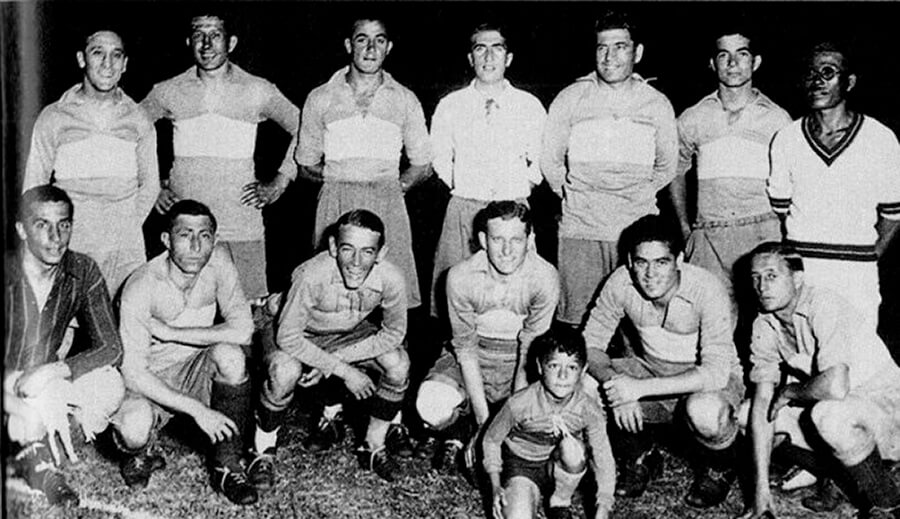
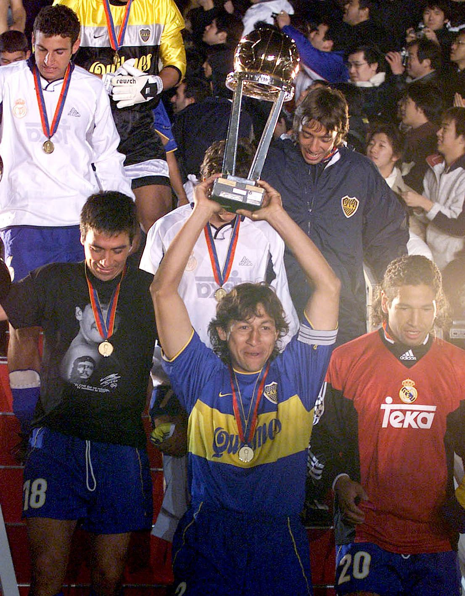
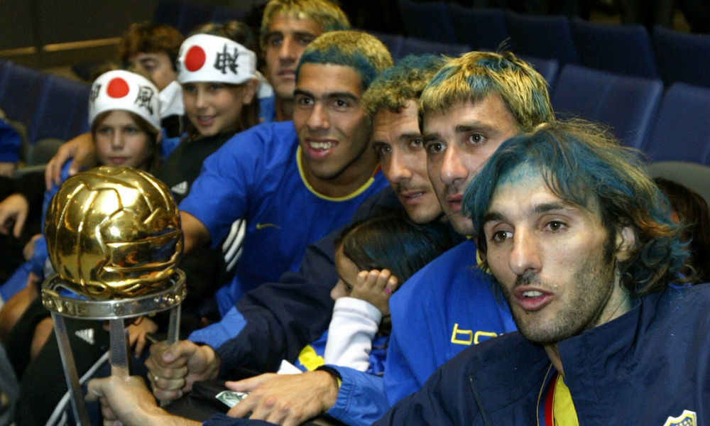
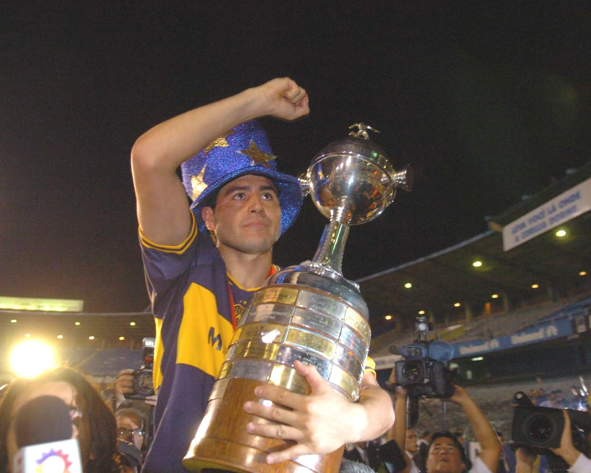
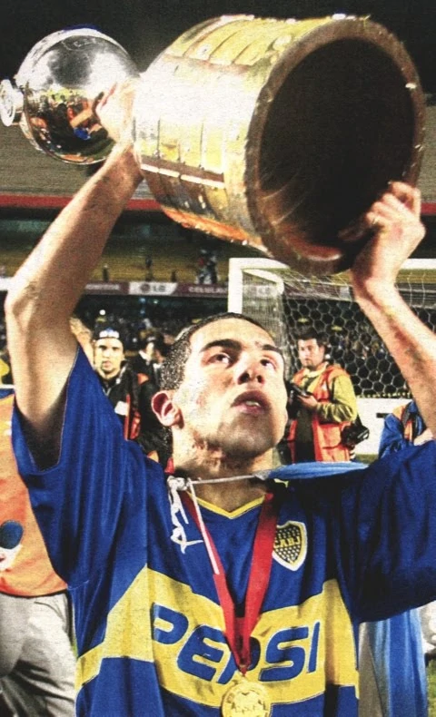
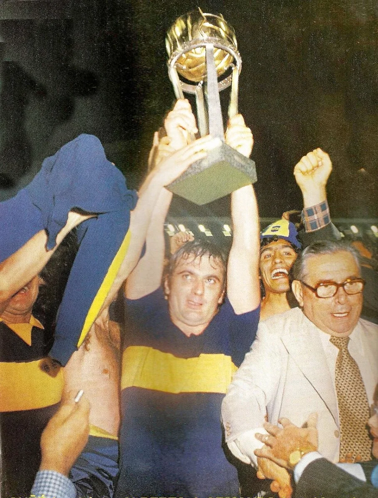
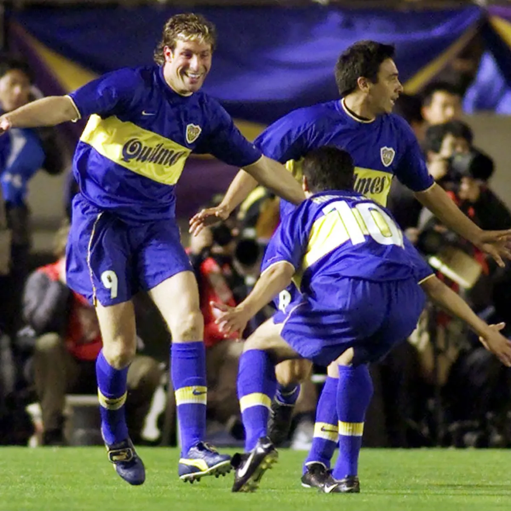
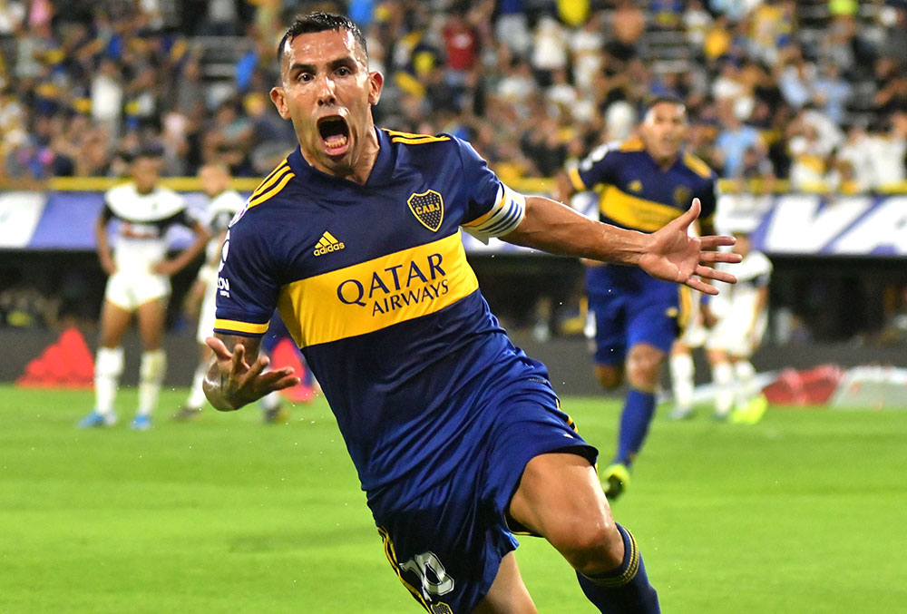
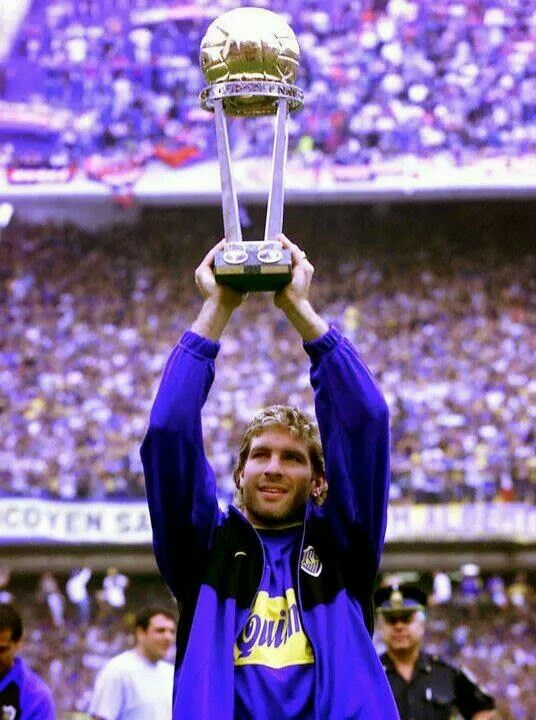

Juan Roman Riquelme:
Torneo Apertura: 1998, 2000, 2008 y 2011.
Torneo Clausura: 1999.
Copa Argentina: 2011 y 2012.
Copa Libertadores de América: 2000, 2001 y 2007.
Copa Sudamericana: 2008.
Copa Intercontinental: 2000.
CLUB ATLÉTICO BOCA JUNIORS
Creado el 3 de Abril de 1905

Primer equipo amateurs de Boca Juniors en 1930 para el Torneo Asociacion Amateurs
El equipo estaba conformado por; arriba: Moreyras, Bidoglio, Pedemonte, Mena, Muttis, Arico Suárez y Hanai (masajista). Abajo:Garassini, Penella, Kuko, Tarascone, Cherro y Alberino.








LA HISTORIA LA ESCRIBIMOS NOSOTROS
Nuestros 4 idolos más ganadores
Martin Palermo:
Torneo Apertura: 1998, 2000, 2005 y 2008.
Torneo Clausura: 1999 y 2006.
Copa Libertadores de América: 2000 y 2007.
Copa Sudamericana: 2004 y 2005.
Copa Intercontinental: 2000.
Recopa Sudamericana: 2005, 2006 y 2008.
Carlos Bianchi:
Torneo Apertura: 1998, 2000 y 2003.
Torneo Clausura: 1999.
Copa Libertadores de América: 2000, 2001 y 2003.
Copa Intercontinental: 2000 y 2003.
Sebastian Battaglia:
Torneo Apertura: 2000, 2003, 2005, 2008 y 2011.
Torneo Clausura: 1999 y 2006.
Copa Libertadores de América: 2000, 2001, 2003 y 2007.
Copa Intercontinental: 2000 y 2003.
Recopa Sudamericana: 2005 y 2006.